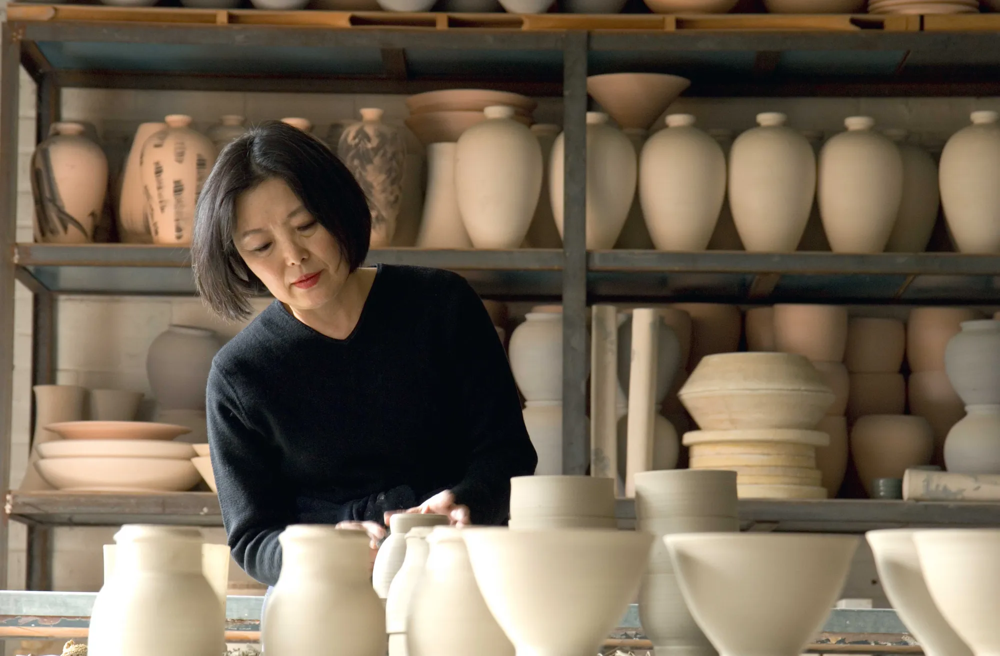
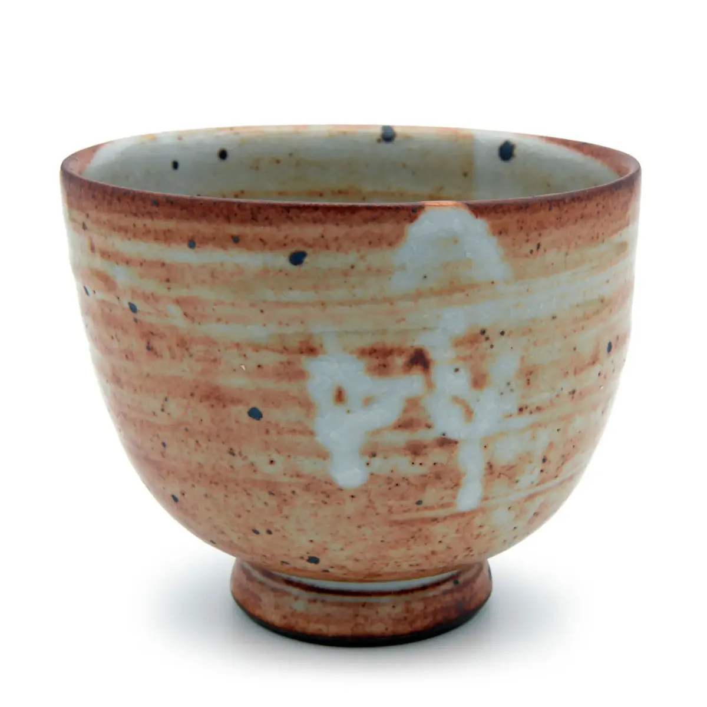
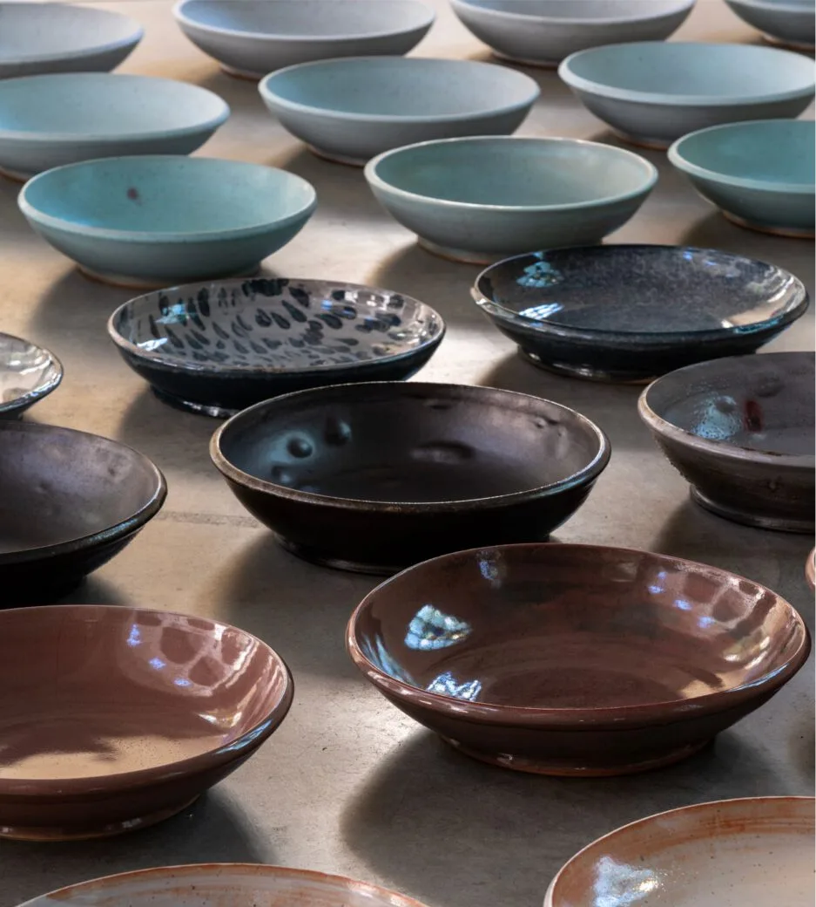
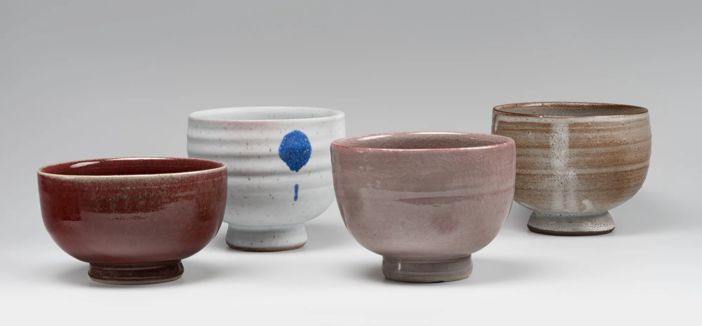

Young-Jae Lee
Geboren 1951 in Seoul, Studium in Seoul und Wiesbaden. Seit 1987 leitet sie die Keramische Werkstatt Margaretenhöhe in Essen – alle Meisterstücke stammen aus ihrer Hand.

„Die minimale Veränderung ist Young-Jae Lees unbegrenzter Freiraum – in der Form wie in der Farbigkeit der Glasur und der Bemalung.“

Bauhaus und koreanisches Erbe.
„Die Schönheit in den Dienst des Funktionalen zu stellen, geometrische Formen wie den Kubus, Quader, Kegel und Kugel als Gestaltungsgrundlage zu nehmen ist eine der Ideen des Bauhauses. Eine Tradition, der sich Young-Jae Lee verpflichtet fühlt. Da ist aber noch ihr koreanisches Erbe, das heitere, schwerelose Empfinden für die Form und die subtilen Farben.“
„Das sinnliche Gespür reifte in der frühen Essener Zeit mit der Wiederannäherung an die koreanische Keramik, vor allem an die anscheinend unerreichbare Schönheit jener zweiteiligen Vasen. Für Young-Jae Lee war das eine existenzielle Auseinandersetzung.“
Gisela Jahn, »Gefäße drehen, Gefäße betrachten, Gefäße benützen«Eine nach der anderen.
„Sie erzählte von den Zeremonien in den Tempeln, dem Ritual eines hundertfachen Niederkniens, Niederfallens vor den Buddha-Statuen. Sie erzählte von ihrer Großmutter, die sich diesen geistig-körperlichen Übungen bis ins hohe Alter unterzog. Daran habe sie sich immer wieder erinnert, während sie ihre Schalen drehte, eine nach der anderen, ohne je darüber müde zu werden, ohne je das Gefühl gehabt zu haben, dass sie ins Monotone verfalle.“

Biografie
Von Seoul über Wiesbaden, Sandhausen und Kassel nach Essen.
- 1951
Geboren in Seoul
- 1968–72
Studium an der Hochschule für Kunsterziehung in Seoul
- 1972–73
Praktikum bei Christine Tappermann in Wallrabenstein
- 1973–78
Studium der Keramik bei Margot Münster und der Formgestaltung bei Erwin Schutzbach an der Fachhochschule Wiesbaden
- 1976–77
Praktikum bei Ralf Busz in Friedrichsfeld
- 1978–87
Eigene Werkstatt in Sandhausen bei Heidelberg
- 1984–87
Künstlerisch-wissenschaftliche Mitarbeiterin an der Gesamthochschule Kassel
- seit 1987
Leitung der Keramischen Werkstatt Margaretenhöhe GmbH, Essen
- 2015
Gastprofessur (Sommersemester) an der Abteilung für Keramik des Kollegs für Kunst und Design an der EWHA Womans University in Seoul, Korea
- 2016
Ehrendoktorwürde der Eugeniusz-Geppert-Akademie der Schönen Künste in Breslau
Texte über Young-Jae Lee
Essays aus Katalogen und Büchern, vollständig zu lesen auf der bisherigen Website.
-
Gespannte Lebendigkeit
„Young-Jae Lees Gefäße nehmen einen geheimnisvollen Dialog mit der spätgotischen Emporenkirche Sankt Peter auf.“
-
Gefäße drehen, Gefäße betrachten, Gefäße benützenÜber die Schalen- und Vasenserien von Young-Jae Lee
„Viele hundert Schalen hat Young-Jae Lee gedreht. In letzter Zeit sind es sich verhalten öffnende Schalen, manche wie ein Blütenkelch, andere trichterförmig.“
-
»Wie erlange ich Erkenntnis der Liebe?«Künstlerische und mystische Aspekte der Devotion
„Devotion, … das heißt die Verehrung oder auch die Kunst der Hingabe …“
-
Young-Jae Lee – Die Töpferin
-
Die aufgehobene ZeitElf Bemerkungen zu eintausendeinhundertundelf Schalen von Young-Jae Lee
„Immer sind es Schalen, und doch ist keine wie die andere.“
-
Galaxie 333Anmerkungen zu den Schalen von Young-Jae Lee
„Young-Jae Lees Vasen und Schalen sind immer ästhetisches Objekt und Gebrauchsgegenstand, Gefäß und Skulptur.“

Ausstellungen
Eine Auswahl der letzten zehn Jahre. Ausstellungen seit 1980 in Europa, Korea, Japan und den USA.
- 2026
„Stille Gäste“, Künstlerzeche Unser Fritz 2/3, Herne
„99 Schalen – ein Kosmos“, Museum für Ostasiatische Kunst (MOK), Köln
„Young-Jae Lee – Schalen“, Umbrella, Nørre Nebel, Dänemark - 2025
„Young-Jae Lee: SCHALEN“, Stadtkirche St. Jakobi, Chemnitz
„Young-Jae Lee: Keramik“, Galerie Jahn und Jahn, München - 2024
„Young-Jae Lee – Forms from the Earth“, David Nolan Gallery, New York, USA
„Young-Jae Lee: SCHALEN“, Stadtkirche St. Jakobi, Chemnitz
„100 Jahre Keramische Werkstatt Margaretenhöhe – Young-Jae Lee im Hetjens“, Hetjens Museum, Düsseldorf - 2023
„Gefäße retrospektiv“, Kulturforum Blaue Haus, Dießen am Ammersee
- 2022
„SIEBEN MAL SIEBEN“, Kunst-Station Sankt Peter, Köln
„Contemporary Craft Young-Jae Lee“, Museum für Kunst & Gewerbe, Hamburg - 2021
„Gefäße“, Galerie Greve, St. Moritz, Schweiz
- 2020
„Young-Jae Lee Spinatschalen“, Galerie Greve, Köln
- 2019
„Werkkunst Keramiken von Young-Jae Lee“, Dommuseum, Hildesheim
„Young-Jae Lee“, Museum Folkwang, Essen
Galerie Tohkyo, Tokyo, Japan
„Young-Jae Lee – Emptying, Filling, and Emptying“, Gwangju Museum of Art, Ha Jung-woong Museum of Art, Gwangju, Korea - 2018
„Œuvres en céramique – Young-Jae Lee“, Galerie Karsten Greve, Paris, Frankreich
„Young-Jae Lee – Ceramics“, Centre Culturel Coréen, Brüssel, Belgien
„Arbeiten in Keramik – Young-Jae Lee“, Galerie Karsten Greve, Köln - 2017
Shinsegae Gallery, Daegu, Gwangju, Incheon, Busan, Korea
Gallery Kan, Fukushima, Japan
Galerie Tohkyo, Tokyo, Japan
„Hingabe – Gefäße von Young-Jae Lee“, Gartenpavillon des Klosters Beuerberg des Diözesanmuseums Freising - 2016
„Witness to an Ancient Truth“, Pucker Gallery, Boston, USA
„Augenblicke“, Galerie Jahn, München
„Nicht schön“, Österreichisches Museum für angewandte Kunst / Gegenwartskunst, Wien, Österreich
„Young-Jae Lee – Bowls“, Manggha Museum of Japanese Art and Technology, Kraków, Polen
„Young-Jae Lee – Vessels“, Museum of Architecture, Wrocław, Polen
„Keramische Werkstatt Margaretenhöhe – Young-Jae Lee“, Galeria NEON, Wrocław, Polen
Werke in Sammlungen
Gefäße von Young-Jae Lee befinden sich in Museen und Sammlungen in Deutschland, Österreich, Israel und den USA.
- Museum für Asiatische Kunst, Berlin
- Museum of Fine Arts, Boston
- Art Institute of Chicago, Chicago
- Hetjens-Museum, Düsseldorf
- Museum für Angewandte Kunst, Frankfurt am Main
- Keramion, Frechen
- Sammlung von Ingrid und Werner Welle im Museum für Angewandte Kunst, Gera
- Museum für Kunst und Gewerbe, Hamburg
- Israel Museum, Jerusalem
- Badisches Landesmuseum, Karlsruhe
- Museum für Ostasiatische Kunst, Köln
- Kunst-Station Sankt Peter, Köln
- Grassi Museum / Museum für Kunsthandwerk, Leipzig
- Pinakothek der Moderne, München
- Offene Kirche St. Klara, Nürnberg
- Philadelphia Museum of Art, Philadelphia
- Peabody Essex Museum, Salem, Massachusetts
- Österreichisches Museum für angewandte Kunst, Wien
Auszeichnungen
- 1980
1. Preis der Frechener Kulturstiftung
- 1981
2. Preis des Richard-Bampi-Preises zur Förderung junger Keramiker, Osnabrück
- 1989
Goldmedaille des Bayerischen Staatspreises
- 2016
Verleihung der Ehrendoktorwürde (Doktorat honoris causa) der Eugeniusz Geppert Academy of Art and Design in Wrocław
Publikationen
Kataloge, Bücher und Artikel, 1981 bis 2020.
- Young-Jae Lee – das Grün in den Schalen
- Günter Figal, Einfachheit. Über eine Schale von Young-Jae Lee / Simplicity. On a bowl by Young-Jae Lee
- Young-Jae Lee und Emil Schumacher
- Vessels. Installationen von Young-Jae Lee
- Young-Jae Lee. Formen aus der Erde
- Reinhard Krause, Wo aus Braunrot Jadegrün wird
- Philipp Meier, Schönheit des Einfachen
- Young-Jae Lee, Spindelvasen
- Young-Jae Lee, 1111 Schalen
- Young-Jae Lee – Gefäße
- Young-Jae Lee
- Keramische Werkstatt Margaretenhöhe 1924–1999
- Young-Jae Lee, Keramiken 1975–1995
- Keramik des 20. Jahrhunderts: Sammlung Welle
- Koreanische Keramik in Deutschland: Young-Jae Lee, Si-Sook Kang, Kap-Sun Hwang
- Zeitgenössisches deutsches Kunsthandwerk, Triennale 1994
- Zeitgenössisches deutsches und finnisches Kunsthandwerk, Triennale 1987/88
- Deutsche Keramik heute
- Zeitgenössisches deutsches und niederländisches Kunsthandwerk, Triennale 1981
Von ihr selbst gedreht, bemalt und glasiert.
Die Meisterstücke – Schalen, Kummen und Vasen – stammen alle aus der Hand Young-Jae Lees. Aktuell sind ihre Arbeiten in Köln und Wesel zu sehen.